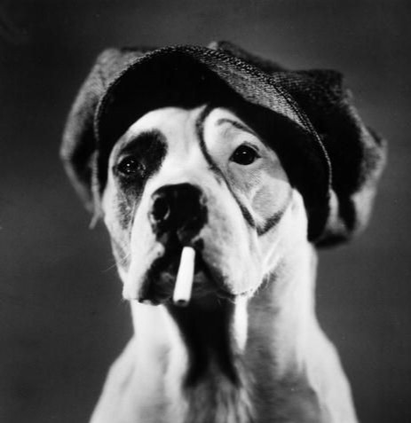

It's Pal, the Wonder Dog!
(better known as Pete)

Pal the Wonder Dog was an film actor in the early 1920's.
He appeared as Buster Brown's "Tige", and is best known as his
portrayal of "Pete" from the Our Gang series. Pal crossed the
Rainbow Bridge in 1930.
Click me to learn more!
Film Credits
- The Freshman, 1925
- Buster Brown (series), 1925-29
- Our Gang (series), 1925-29
Description
- Canine
- Breed: Standard Scott American bulldog
- Color: Black Brindle and White